Cuộc Chiến Thương Mại Điện Tử: Amazon Trở Thành Gã Khổng Lồ Bán Mọi Thứ
Hãy quay ngược thời gian về năm 1995 khi Bill Clinton đang là Tổng thống Mỹ, đĩa CD vẫn phổ biến trên thị trường, và mua hàng trực tuyến trên mạng Internet giống như là chơi xổ số: lựa chọn hạn chế, chưa chắc đã nhận được hàng, nhận thì chắc gì đã là hàng đúng hãng, và rủi ro thẻ tín dụng bị hack là không nhỏ.
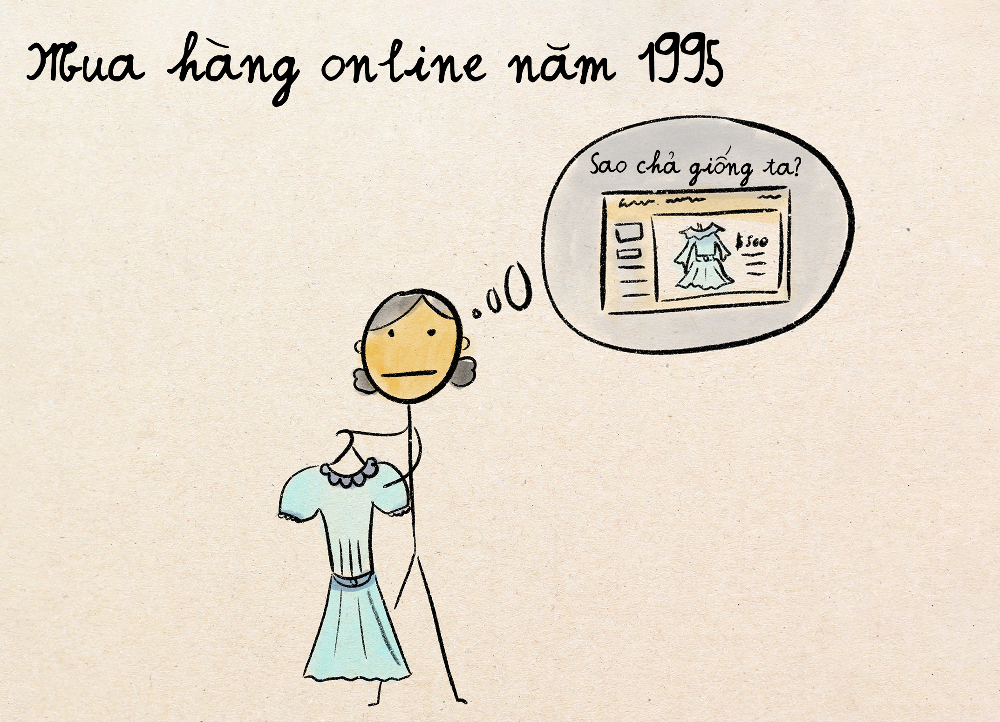Và bạn có muốn mua đi chăng nữa thì cũng rất hiếm nơi để mua: eBay, vài công ty nhỏ khác bán thức ăn cho thú cưng, hoặc là một tiệm sách online điều hành bởi một gã đầu trọc tên Jeff Bezos.
Cái tiệm sách đó, không ai ngờ tới, chỉ trong thập kỷ tiếp theo sẽ thống trị thế giới và thay đổi hoàn toàn việc mua bán hàng online.
Chương 1 - Amazon bắt đầu như thế nào?
Khi mới mở cửa, Amazon chỉ bán một mặt hàng duy nhất: sách. Thời điểm đó, để mua hàng thì bạn phải đặt hàng qua catalog và thư, trong khi Amazon lại cho phép khách hàng đặt hàng trên Internet và gửi hàng đến với tốc độ nhanh và đáng tin cậy. Nghe thì quá bình thường vào ngày nay, nhưng thực sự là cuộc cách mạng bán hàng những năm 1990s.
Từ việc bán sách, Jeff Bazos nhanh chóng mở rộng bán mọi thứ khác ngoài sách.
Cách Amazon làm rung chuyển thương mại điện tử
1. Kệ hàng vô giới hạn
Các cửa hàng truyền thống thường bị giới hạn bởi không gian vật lý: bạn chỉ có thể nhét được từng đó sách lên một cái kệ, từng đó kệ vào một cửa hàng, và từng đó cửa hàng trong một thành phố. Nhưng một trang web thì về cơ bản có không gian trưng bày vô hạn. Chỉ trong một thời gian ngắn, Amazon có thể cung cấp nhiều đầu sách hơn tất cả các nhà sách và thư viện khác.
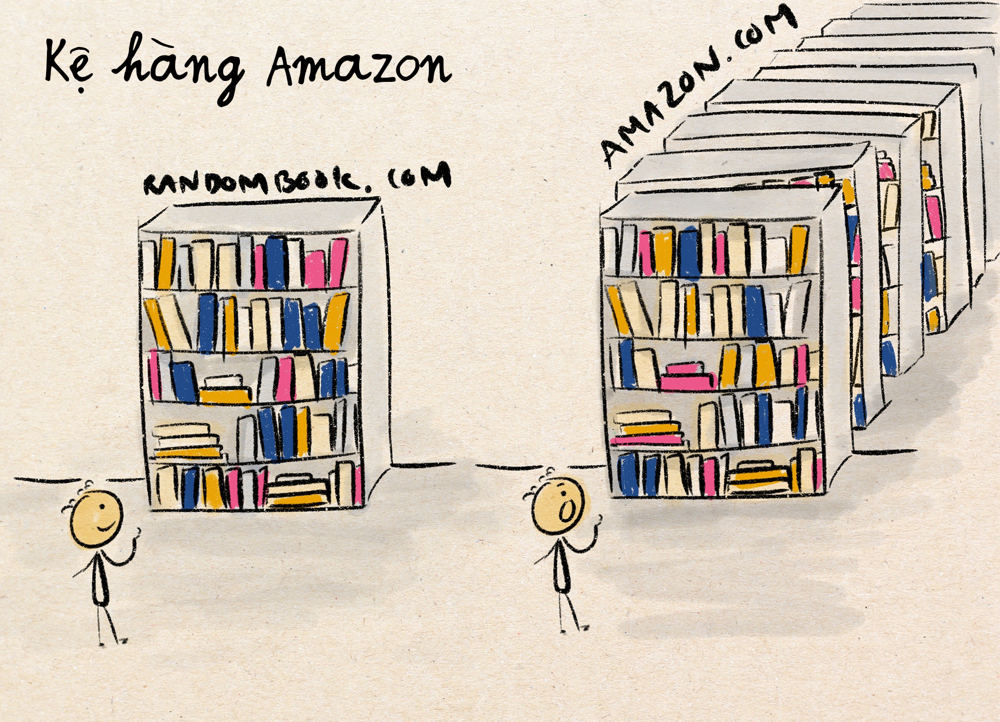2. Đánh Giá Khách Hàng: Ý Tưởng Điên Rồ Lại Hóa Ra Cực Kỳ Hiệu Quả
Amazon còn phát minh ra việc "để khách hàng tự viết đánh giá sản phẩm," một chiến lược khiến các đối thủ cạnh tranh hoang mang. Nhỡ đâu khách hàng nói xấu hoặc cảnh báo người dùng khác đừng mua sản phẩm thì sao? Nhưng Amazon hiểu ra một lý thuyết tâm lý khách hàng cốt lõi: khách hàng tin tưởng lẫn nhau hơn là tin vào các doanh nghiệp bán hàng. Và vì thế đánh giá từ các khách hàng khác sẽ giúp người mua tự tin hơn và mua nhiều hàng hơn.
Những đánh giá từ khách hàng này cũng tạo ra "hiệu ứng mạng lưới" (Network effect) – có nghĩa là "càng nhiều người dùng, giá trị của nó càng tăng". Mỗi bài đánh giá sản phẩm khiến Amazon trở nên hữu ích hơn, nhờ đó thu hút thêm khách hàng. Những khách hàng mới này lại viết thêm đánh giá, và vòng lặp cứ thế tiếp tục. Dữ liệu từ người dùng này khiến việc mua sắm càng tiện lợi hơn.
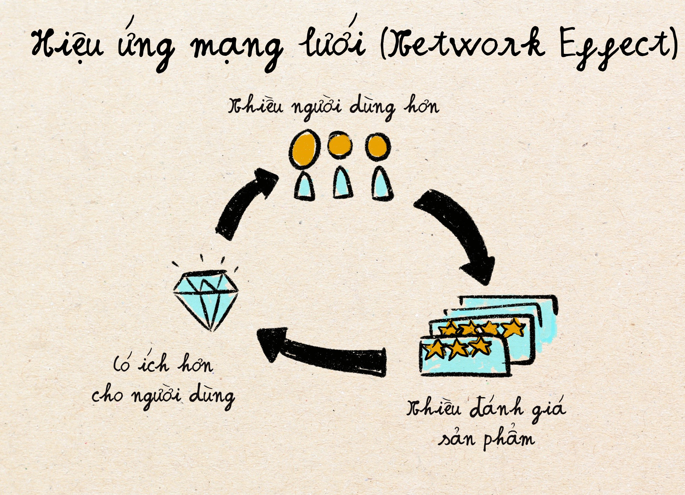3. Chiến Lược Đường Dài
Trong những năm 1990s, phần lớn các công ty khác tập trung vào việc kiếm tiền ngay lập tức. Nhưng Bezos lại chơi một ván cờ dài: ông không cố gắng tạo ra lợi nhuận mà tập trung vào việc cho khách hàng những sản phẩm giá tốt nhất. Thậm chí có những sản phẩm bán ra lại khiến Amazon bị lỗ (chiến lược Loss leader – nghĩa là bán hàng câu khách).
Chiến lược này hiệu quả vì một lý do đơn giản: Amazon hiểu rằng về lâu dài, công ty có nhiều khách hàng nhất sẽ chiến thắng. Và cách tốt nhất để có được nhiều khách hàng nhất là mang lại cho họ trải nghiệm tốt nhất – dù điều đó có nghĩa là không kiếm tiền suốt hai mươi năm!
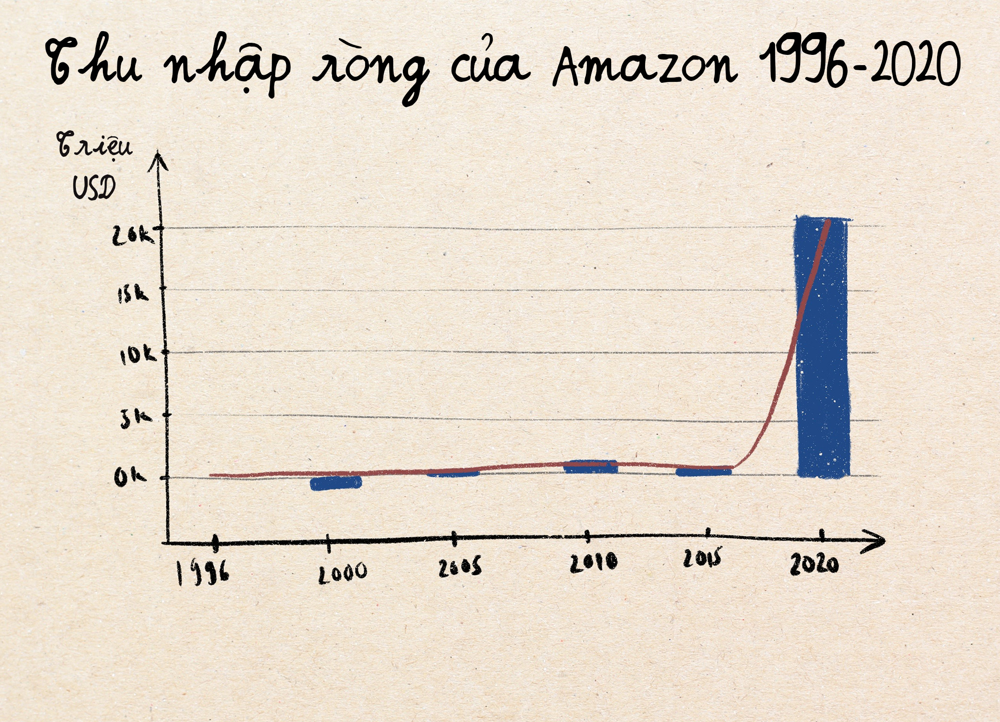Ngày nay các công ty công nghệ thường hay theo chiến lược đường dài và các nhà đầu tư công nghệ cũng không quan tâm tới việc doanh thu tạo ra ngay trong nhiều năm đầu. Nhưng thời điểm mấy chục năm trước, chiến lược đầu tư để lấy thị trường lâu dài kiểu này không phổ biến.
Chương 2: Cuộc Chạy Đua Hậu Cần (Logistics)
Gửi hàng trong 2 ngày
Tua tới 5 năm sau đó, vào những năm 2000s, việc chuyển hàng tới khách hàng khi mua trực tuyến nó giống như ném tin nhắn vào chai nước rồi thả trôi ra biển. Nếu thuận lợi, gói hàng của bạn sẽ xuất hiện vào một thời điểm nào đó trong "7–10 ngày làm việc" tới. Tiêu chuẩn thời gian gửi hàng này ai cũng chấp nhận, như thể chấp nhận rằng máy tính phải mất năm phút để khởi động là chuyện thường.
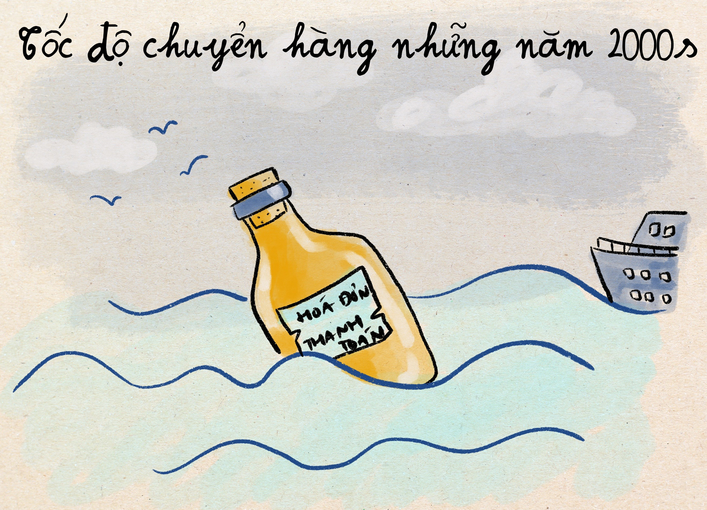Amazon thì lại tuyên bố: "Nếu chúng tôi giao hàng trong 2 ngày thì sao?"
Thay vì trở thành trò cười, Amazon chứng tỏ với các nhà đầu tư là họ không nói điêu. Giao hàng trong 2 ngày trở thành một slogan mới thu hút người dùng mua hàng của công ty.
Prime $79 làm thay đổi cách nhìn về mô hình thu nhập kinh doanh
Năm 2005, Amazon ra mắt Prime với lời hứa đơn giản: trả $79 mỗi năm để được giao hàng miễn phí nhanh hai ngày, nguyên cả năm. Lúc đó, ý tưởng này nghe vừa thiên tài vừa điên rồ, đến mức các nhà đầu từ Wallstreet cũng không biết có nên tin hay không.
Prime không chỉ tập trung vào việc giao hàng nhanh, nó thay đổi hành vi tiêu dùng một cách sâu sắc. Một khi người dùng đã trả tiền để trở thành thành viên Prime rồi thì mỗi lần mua hàng, họ sẽ nghĩ "đã trả tiền vận chuyển hàng năm rồi, thì đặt thêm hàng cho nó đỡ phí." Mặc dù những món hàng đặt thêm đó bạn chưa chắc đã cần, hoặc chưa chắc đã rẻ hơn mua trong siêu thị.
"Vận chuyển miễn phí" cho khách hàng đăng ký Prime là một thủ thuật tâm lý nguỵ trang là dịch vụ khách hàng. Nó giúp Amazon trở thành lựa chọn đầu của người dùng khi mua hàng, online lẫn offline.
Mạng lưới hậu cần với kích cỡ chưa từng có
Để Prime có thể hoạt động, Amazon phải xây dựng một thứ chưa từng tồn tại trước đây: một mạng lưới vận tải đủ sức cạnh tranh với các công ty chuyên về gửi hàng như UPS và FedEx, nhưng với mục tiêu duy nhất là đưa hàng đến tay người tiêu dùng của Amazon.
Amazon đầu tư hơn 100 tỷ đô la xây dựng hệ thống hậu cần với hơn 1000 trung tâm hoàn tất đơn hàng trên toàn cầu, mỗi cái có kích thước bằng khoảng 28 sân bóng đá, và tuyển dụng hàng nghìn người và cả robot để tìm hàng hoá trong kho. Con số đầu tư khủng này còn lớn hơn ngân sách quân sự của nhiều quốc gia.
Với hệ thống này, khi Amazon càng có nhiều khách hàng mua hàng, chi phí vận chuyển chia ra cho từng gói hàng càng rẻ. Khái niệm này trong kinh tế gọi là "Economies of scale" (Hiệu ứng quy mô).
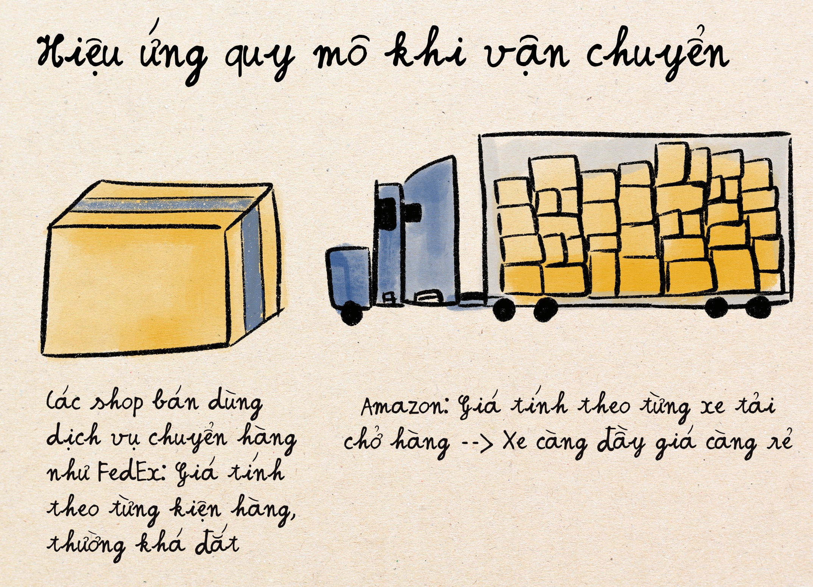Bài toán dặm cuối mới là khó
Phần đắt đỏ và phức tạp nhất trong toàn bộ quá trình giao hàng là đoạn cuối cùng của quá trình: giao hàng từ trung tâm phân phối tới tận cửa nhà (tiếng Anh: Last mile - dặm cuối). Ví dụ, chi phí vận chuyển gói hàng từ New York đến Los Angeles (gần 5000 cây số) gần bằng chi phí từ trung tâm phân phối Los Angeles đến nhà bạn ở ngoại ô Los Angeles (vài chục cây số). Lý do là vì phần đầu khi di chuyển bằng máy bay và xe tải, Amazon có thể chuyển hàng nghìn gói hàng cùng lúc. Trong khi đó phần sau thì phải cần một con người lái xe đến từng địa chỉ cụ thể và gõ đúng cửa nhà bạn để giao hàng - tốn thời gian, tốn nhân công hơn rất nhiều mặc dù là khoảng đường đi ngắn hơn.
Để loại bỏ từng điểm kém hiệu suất nhất trong hành trình "dặm cuối", Amazon đã thử rất nhiều cách: có một đội tài xế riêng, hợp tác với bưu điện, xây dựng các tủ giao hàng trong cửa hàng tạp hóa, và cả drone giao hàng. Cho đến nay, Amazon vẫn sử dụng nhiều biện pháp khác nhau để giải bài toán này. Và nhờ có hệ thống hỗ trợ "dặm cuối" hiệu quả và phong phú, công ty đã tạo ra được lợi thế cạnh tranh khổng lồ mà không siêu thị hay cửa hàng nào khác có thể đấu lại được.
Hiệu ứng lan toả (Ripple Effect): Amazon khiến đối thủ phải thay đổi mô hình kinh doanh
Cuộc cách mạng hậu cần của Amazon không chỉ thay đổi Amazon — mà thay đổi toàn bộ ngành bán lẻ. Một khi khách hàng đã quen với dịch vụ giao hàng trong hai ngày, họ bắt đầu đòi hỏi điều đó từ các cửa hàng khác. Trong một thời gian ngắn, các nhà bán lẻ trên thế giới phải chạy đua đổ hàng tỷ đô vào việc làm mới chuỗi cung ứng và hậu cần để bắt kịp tốc độ giao hàng của Amazon. Nếu không họ sẽ bị coi là chậm chạp, lỗi thời, và có nguy cơ mất khách về tay Amazon.
"Tiêu Chuẩn Amazon" ra đời từ đó. Nó đặt ra mức kỳ vọng tối thiểu mà mọi nhà bán lẻ online đều phải đáp ứng. Giống như cách iPhone tạo ra "tiêu chuẩn điện thoại thông minh" mà các nhà sản xuất điện thoại khác phải chạy theo.
Phần tàn nhẫn nhất của cuộc chiến này đó là hầu hết các nhà bán lẻ không đủ sức tự xây mạng lưới hậu cần và vận chuyển như Amazon, và phải buộc "thuê" dùng mạng lưới của Amazon để gửi hàng.
Trung Quốc làm theo: Cách Alibaba chạy đua theo cùng một tham vọng thống trị hệ thống gửi hàng
Ở bên kia bán cầu, Alibaba, một công ty của Trung Quốc, nhìn vào Amazon và nghĩ: "Tụi tui làm được thôi, nhưng theo phong cách của người Trung Quốc." Alibaba bắt tay vào xây dựng mạng lưới mà họ gọi là Cainiao. Nhưng thay vì tự xây dựng mọi thứ từ đầu, Alibaba tạo ra một nền tảng nơi hàng nghìn công ty vận tải đã có trên thị trường (mỗi công ty đã có sẵn hệ thống xe và nhà kho riêng) có thể đăng ký và lấy hàng vận chuyển cho Alibaba. Vì không cần phải đầu tư xe và kho, Alibaba mở rộng nhanh hơn rất nhiều và mạng lưới đến từng địa phương nhỏ lẻ linh hoạt hơn.
Nếu ta so sánh hệ thống của Amazon như taxi, thì hệ thống vận tải của Alibaba giống như Uber vậy.
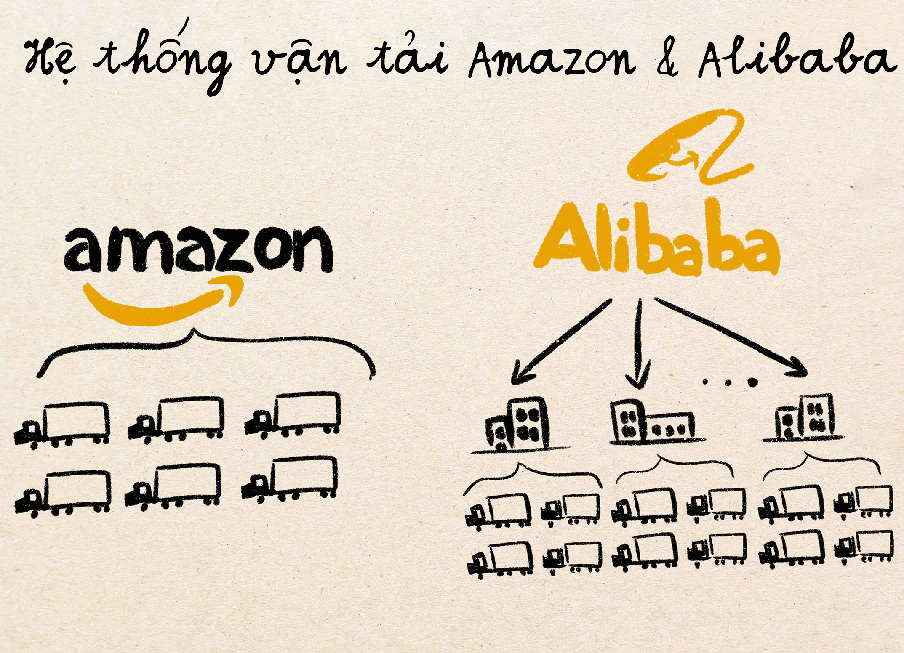Nhược điểm của hệ thống Alibaba tất nhiên là cũng khá lớn: họ không thể kiểm soát chất lượng và trải nghiệm khách hàng tốt bằng Amazon, và vì thế có khả năng mất đi lòng tin khách hàng khi dịch vụ không tốt như mong muốn.
Chương 3: Mô hình kinh doanh của Amazon là sự kết hợp của một Platform (Nền Tảng) và Aggregator (Nhà tổng hợp)
Để đào sâu thêm về mô hình kinh doanh của Amazon, cho phép mình giới thiệu hai mô hình sau:
- Nền tảng (platforms)
- Nhà tổng hợp (aggregators)
Để cho dễ nhai, bạn có thể tưởng tượng nền tảng giống như là một trung tâm thương mại, còn nhà tổng hợp thì giống như chuỗi siêu thị Lotte
Nền Tảng: Mô Hình Trung Tâm Thương Mại
Một trung tâm thương mại kiếm tiền bằng cách cho các cửa hàng thuê mặt bằng. Họ không quan tâm cửa hàng thuê là ai, điều họ quan tâm là có thật nhiều cửa hàng và thật nhiều khách đến mua sắm — rồi họ chỉ cần đến thu tiền thuê mặt bằng.
Mỗi cửa hàng có thương hiệu riêng, phong cách riêng, và mối quan hệ riêng với khách hàng.
Shopify là một ví dụ điển hình. Nó giống như một nhà phát triển trung tâm thương mại, chuyên xây "mặt bằng và dịch vụ online như thanh toán, thiết kế web, gửi hàng, v.v." và cho các cửa hàng bán online thuê. Khi người dùng mua hàng từ một cửa hàng online nào đó dùng hệ thống nền tảng của Shopify, họ thường không biết là cửa hàng đó dùng Shopify để xây dựng trang và cung cấp các dịch vụ đằng sau. Shopify thay vào đó thu một khoản phí nhỏ để duy trì hoạt động.
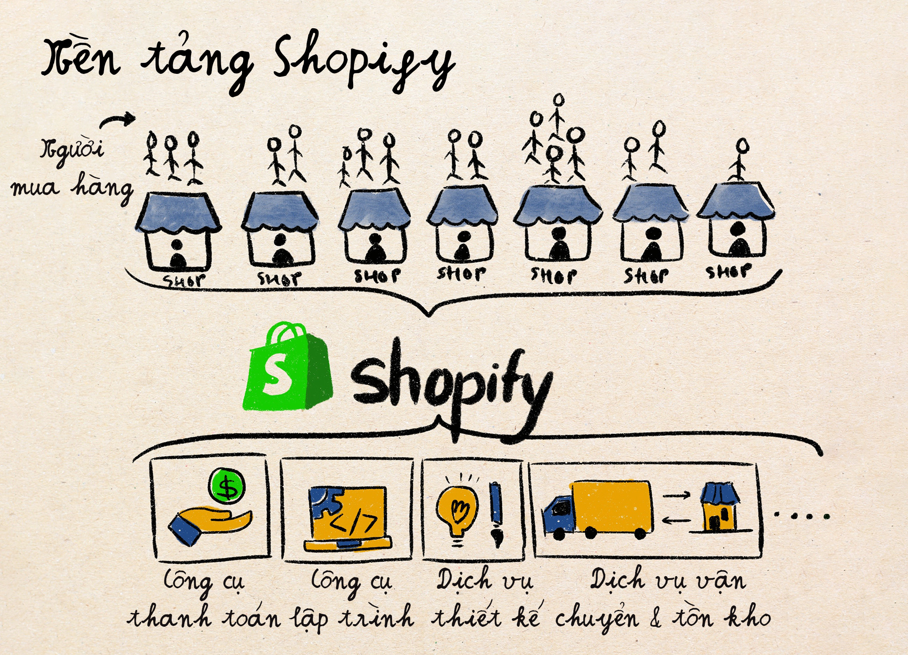Nhà Tổng Hợp: Mô Hình Siêu thị Lotte
Siêu thị Lotte thì hoàn toàn ngược lại. Khi bạn bước vào Lotte mặc dù họ có bán sản phẩm do công ty khác sản xuất, nhưng người mua thường không nghĩ "Chai dầu gội này từ Procter & Gamble." Thay vào đó người ta thường nói: "Tui mua dầu gội ở Lotte!"
Lotte sẽ kiểm soát toàn bộ trải nghiệm mua hàng, từ lúc bạn bước vào, đến lúc bạn rời đi với một tờ hóa đơn dài và cái túi rỗng.
Nhà tổng hợp (Aggregators) cũng hoạt động theo cách đó. Họ lôi cuốn khách hàng, kiểm soát toàn bộ trải nghiệm mua hàng, và khiến các nhà cung cấp sản phẩm bán gần như trở nên vô hình. Google là một ví dụ: khi bạn tìm kiếm thông tin gì đó, thường bạn sẽ không quan tâm quá nhiều tới việc kết quả đến từ trang web nào. Bạn chỉ quan tâm tới việc Google tìm thấy nó cho bạn.
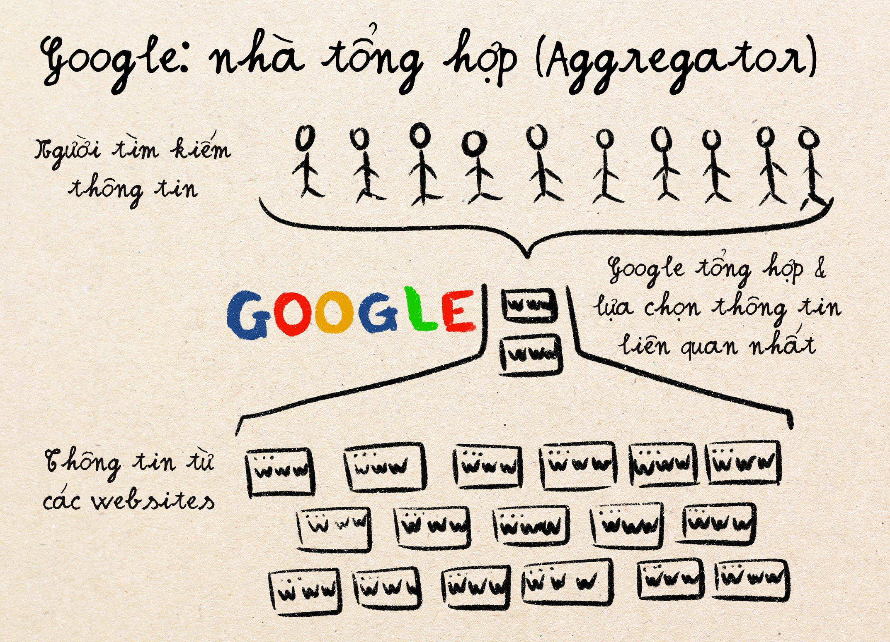Amazon chơi cả mô hình Nền Tảng và Nhà Tổng Hợp
Thông thường thì một công ty chỉ có thể có một trong hai mô hình trên, nhưng Amazon lại hiểu quả trong cả hai mô hình! Đây là lý do vì sao họ trở thành một công ty khổng lồ đáng gờm đến vậy.
Amazon như một siêu thị lớn (Aggregator) kiểm soát toàn bộ trải nghiệm mua sắm của khách hàng: từ lúc tìm kiếm hàng, tới tính tiền, tới việc nhận hàng trong những hộp đựng có logo như nhau và cách đóng gói theo tiêu chuẩn Amazon. Khi mua bất kỳ thứ gì đó trên trang của họ, bạn đều sẽ có cảm giác rất nhất quán, dễ hiểu, ngay cả khi món hàng bạn mua được bán ra bởi một nhà bán lẻ độc lập tên A rao bán trên Amazon. Nhà bán lẻ A này hoàn toàn trở nên vô hình trong hệ thống bán hàng của Amazon.
Nhưng cùng lúc, Amazon cũng là một nền tảng (Platform). Công ty có một dịch vụ tên "Fulfillment by Amazon" cho phép các cửa hàng độc lập gửi hàng hoá của họ đến trung tâm xử lý đơn hàng của Amazon, sau đó sử dụng kho hàng của họ, xe giao hàng của họ, hệ thống thanh toán của họ để bán hàng. Các cửa hàng nhỏ lẻ không thể xây dựng hệ thống tốt như của Amazon, nên phải thuê những dịch vụ hỗ trợ này với mức phí khá cao.
Vì Amazon chơi cả hai mô hình, mối quan hệ giữa họ và các cửa hàng bán lẻ cũng giống như nửa yêu nửa sợ. Bởi vì nếu Amazon quyết định hàng của một cửa hàng nào đó bán tốt và bắt chước sản xuất và bán dưới tên của chính Amazon, với giá rẻ hơn, thì họ có thể dễ dàng đẩy bạn ra khỏi thị trường.
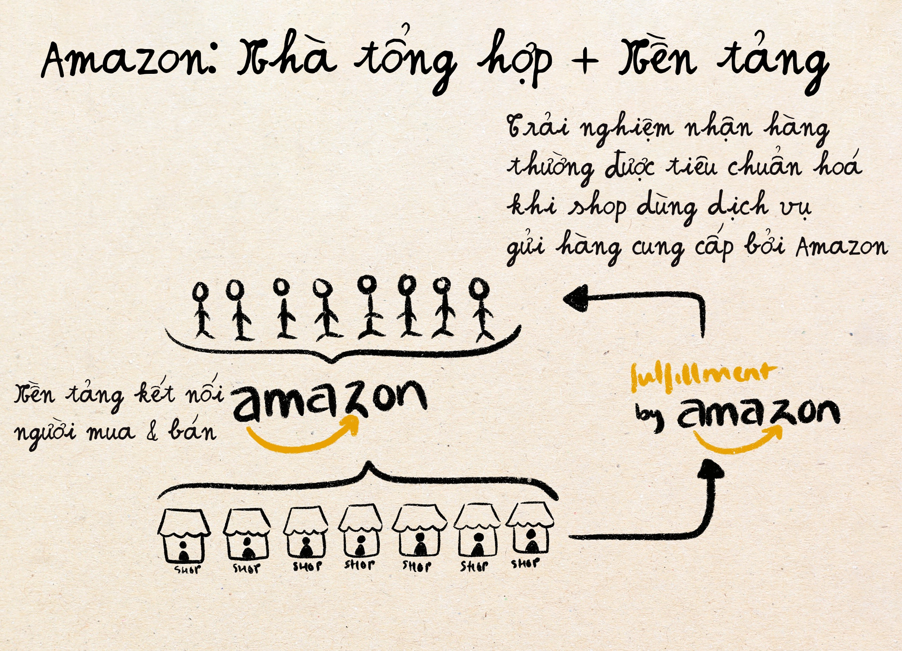Chương 4: Thế tiến thoái lưỡng nan của người bán hàng trên Amazon
Vào những năm 2010s, một xu hướng mới trở nên thịnh hành tại Mỹ: dropshipping trên Amazon. Dropshipping là một hình thức kinh doanh trực tiếp mà người bán không cần giữ hàng trong kho. Thay vào đó, họ rao bán sản phẩm và chỉ khi nào người mua trả tiền, họ mới bắt đầu gửi hàng từ nơi sản xuất gốc (thường là từ Trung Quốc) tới thẳng khách hàng.
Cho đến tận gần năm 2020s, Amazon mới bắt đầu siết chặt quy định về việc sở hữu hàng hoá khi bán để kiểm soát chất lượng dịch vụ. Nhưng trước khi các quy định này được đưa ra, rất nhiều cá nhân đã mon men tìm cách bán lẻ bằng chiến lược Dropshipping.
Hiện thực khắc nghiệt về đủ loại phí mà người mua phải trả Amazon
Nếu như không sử dụng chiến lược dropshipping, và tuân thủ chất lượng dịch vụ mà Amazon đưa ra, thì phần lớn các các nhân bán lẻ sẽ phải đau đầu với đủ loại chi phí họ phải trả.
Đầu tiên là những khoản phí rõ ràng. Amazon thu phí hoa hồng vì họ "giới thiệu khách hàng" cho bạn. Phí nào dao động từ 8-15% giá sản phẩm cho mỗi giao dịch.
Hầu hết người bán với số lượng khác đều dùng đến dịch vụ Fulfillment by Amazon (FBA). Và cho mỗi đơn hàng, phí dùng dịch vụ này thường chiếm thêm 10–20% nữa.
Tiếp theo là chi phí quảng cáo. Với số lượng hàng khủng khiếp trên Amazon, để khách hàng tìm thấy sản phẩm của mình, thường là người bán phải chi tiền quảng cáo để đẩy hàng lên trong danh sách sản phẩm hiển thị cho người dùng. Phần lớn các cá nhân bán thành công tiêu tốn khoảng 20-30% doanh thu nữa cho phần quảng cáo.
Tính đơn giản lại thì: nếu bạn bán một sản phẩm giá $100, bạn có thể mất $15 cho phí giới thiệu, $15 cho phí FBA, và $25 cho quảng cáo. Tổng cộng là $55 trước khi bạn tính đến chi phí sản xuất mặt hàng. Amazon lấy đi 55% doanh thu của bạn!
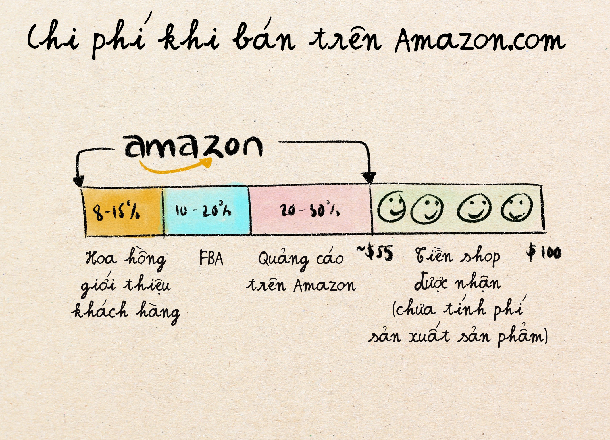Thuật toán tìm kiếm sản phẩm của Amazon khiến nhà bán lẻ chóng mặt
Nếu bạn chọn cách không quảng cáo cho sản phẩm của mình mà để nó tự nhiên "trồi" lên khi người mua dùng thanh công cụ tìm kiếm ở Amazon, thì bạn có thể sẽ phải đối mặt với một bài toán đau đầu khác: làm sao để xuất hiện trong các sản phẩm top 10 trong khi bạn không hiểu thuật toán đằng sau thanh công cụ tìm kiếm của Amazon hoạt động như thế nào?
Để hiển thị danh sách các sản phẩm phù hợp với người mua, Amazon sử dụng một thuật toán cực kỳ phức tạp gọi là A9, được thiết kế để tối đa hóa doanh thu cho Amazon, chứ không phải để đưa người mua đến với sản phẩm tốt nhất hay rẻ nhất. A9 xem xét nhiều yếu tố: tốc độ bán, đánh giá người dùng, mức giá cạnh tranh, tồn kho, và chỉ số hiệu suất của người bán. Nhưng nó cũng tính đến việc Amazon kiếm được bao nhiêu từ mỗi đơn hàng — dẫn đến những động lực có phần méo mó. Sản phẩm mang lại lợi nhuận cao hơn cho Amazon có thể được đẩy lên thứ hạng cao hơn, ngay cả khi có lựa chọn tốt hơn hoặc rẻ hơn.
Để chồng thêm khó khăn, Amazon còn thay đổi thuật toán liên tục. Nhiều nhà bán lẻ chia sẻ, doanh số của họ có thể tụt 50% chỉ sau một đêm, đơn giản vì thuật toán thay đổi mà không hề có một lời giải thích từ Amazon. Vì sự khó hiểu và không công bằng trong thuật toán A9, người bán gần như bắt buộc phải trả tiền để quảng cáo cho sản phẩm của mình.
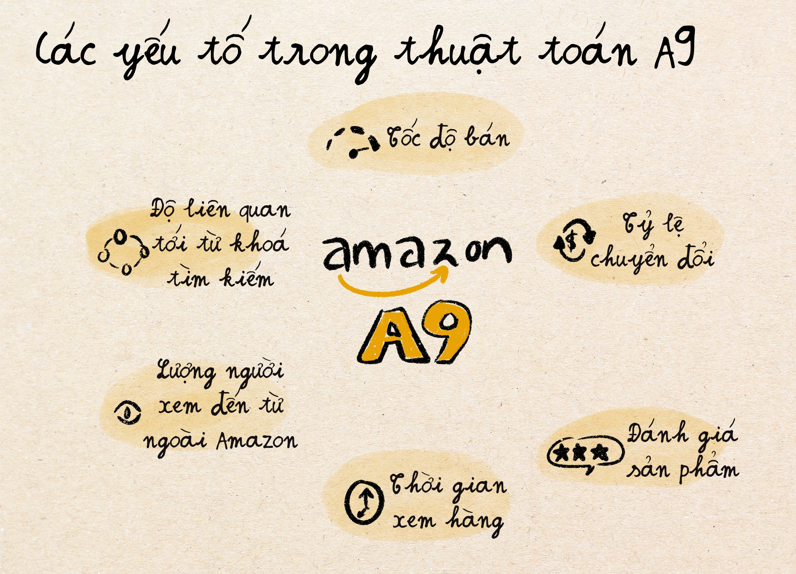Mối đe dọa từ việc Amazon tạo nhãn hiệu riêng (Private Label)
Ngoài những đau đầu trên, một nỗi sợ lớn khác của người bán trên Amazon là: nếu sản phẩm của bạn bán chạy, Amazon có thể quyết định cạnh tranh trực tiếp với bạn. Vì họ có dữ liệu bán hàng của mọi sản phẩm, họ biết chính xác sản phẩm nào đang có lãi và được ưa chuộng. Và họ có thể nhảy vào sản xuất sản phẩm tương tự, với giá thấp hơn và phương pháp giao hàng nhanh hơn. Nhiều người bán từng chứng kiến sản phẩm thành công của mình bị thay thế bằng phiên bản Amazon.
Hơn thế nữa, các sản phẩm Amazon sản xuất thường được ưu tiên trong thuật toán A9 — không phải vì chất lượng vượt trội, mà vì Amazon kiếm được nhiều tiền hơn từ chúng.
Dù đối mặt với vô vàn thách thức, vẫn có những người bán kiếm bộn tiền trên Amazon. Những cá nhân và cửa hàng bán lẻ này thường:
- Lựa chọn các sản phẩm khó bị Amazon sao chép
- Biết cách xây dựng thương hiệu với khách hàng trung thành
- Đa dạng hóa kênh phân phối của họ bằng cách xây dựng quan hệ tốt với khách hàng và khuyến khích họ đến thẳng trang web riêng để mua hàng
Bán hàng trên Amazon có thể sinh lời, nhưng chắc chắn không phải nguồn thu nhập thụ động hay con đường dễ dàng đến tự do tài chính. Với phần lớn người bán, Amazon dạy họ một bài học đắt giá về việc dựa dẫm vào nền tảng và xây nhà trên đất người khác.
Chương 5: So sánh Amazon và các ông trùm thương mại điện tử khác
Mặc dù Amazon là một gã khổng lồ trong thương mại điện tử, trên thị trường vẫn có các ông trùm khác như eBay, Etsy, Walmart, Temu (ở Trung Quốc), và Shopee (ở Đông Nam Á). Cùng một thể loại thương mại điện tử nhưng mỗi công ty lại sử dụng vũ khí và chiến thuật hoàn toàn khác biệt.
Amazon: Vừa là Aggregator, vừa là Platform
Nguồn doanh thu: Như đã phân tích bên trên, Amazon là công ty duy nhất thành công trong việc kiếm tiền dưới vai trò nhà bán lẻ cũng như là nền tảng bán dịch vụ hậu cần. Họ cũng có dòng tiền từ doanh thu quảng cáo và giá cung cấp dịch vụ cho thành viên Prime.
Cấu trúc chi phí của họ được thiết kế xoay quanh các khoản chi cố định khổng lồ (kho hàng, hệ thống xe chở hàng, v.v.) nhằm tạo ra lợi thế từ hiệu ứng quy mô như đã giải thích bên trên. Trong khi đó, hầu hết các công ty khác đều tránh loại chi phí này vì rủi ro cao.
Kết quả: Amazon có thể chấp nhận thua lỗ ở từng giao dịch riêng lẻ vì sẽ bù lại qua các nguồn doanh thu khác.
eBay: Platform thuần túy
Khác với Amazon, eBay là giữ vai trò trung lập và không quản lý kiểm soát chặt chẽ trải nghiệm của khách hàng hay người bán. Dòng doanh thu của họ phản ánh rõ triết lý này — họ chỉ kiếm tiền khi người bán thành công. Lựa chọn là một platform thuần tuý và hỗ trợ người bán thay vì cạnh tranh với họ tạo ra lòng tin mà các nền tảng khác khó có thể sao chép: những người bán lẻ trên eBay biết rằng công ty này sẽ không bất ngờ nhảy vào cạnh tranh trực tiếp với người bán.
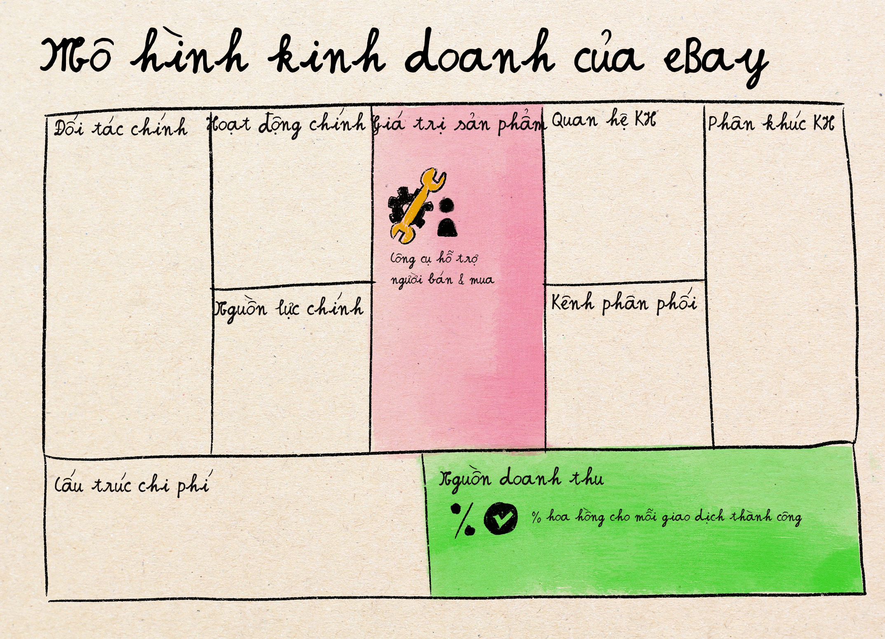Etsy: Platform thuần túy, với tâm hồn nghệ sỹ
Điểm đặc biệt trong mô hình kinh doanh của Etsy là khách hàng mục tiêu của họ tập trung vào những người mua bán các sản phẩm thủ công độc đáo thay vì cố gắng phục vụ tất cả các thể loại hàng hoá khác nhau. Tài sản lớn nhất của họ không phải kho hàng hay thuật toán — mà là cộng đồng và niềm tin thương hiệu họ xây dựng xung quanh tính xác thực của hàng hoá thủ công.
Cấu trúc chi phí của họ phản ánh chiến lược này, với hạ tầng vật lý tối thiểu. Thay vào đó, phần lớn chi phí tập trung vào việc xây dựng cộng đồng và công cụ hỗ trợ người bán. Etsy thành công bằng cách trở thành tất cả những gì Amazon không phải: sản phẩm mang tính cá nhân, độc đáo và có lồng ghép những câu chuyện thú vị về người thợ thủ công bán hàng.
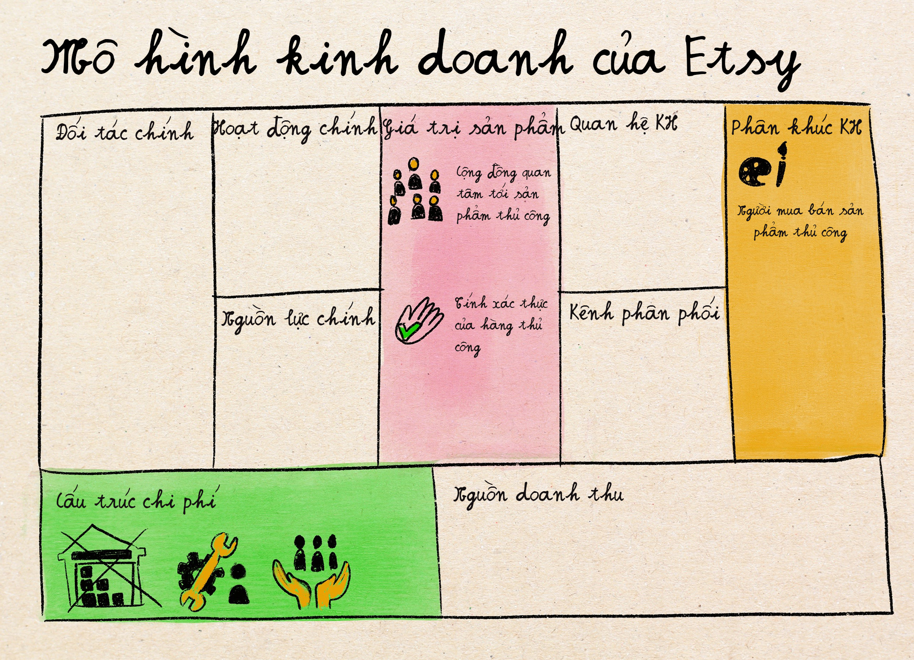Shopee: Platform thuần tuý, nhưng mang tính xã hội (Social Commerce)
Điểm đặc biệt trong dịch vụ của Shopee là họ biết cách biến hoạt động mua sắm từ giao dịch sang giải trí. Các hoạt động chính của họ gồm phát triển trò chơi, tính năng xã hội, và livestream cho người mua bán. Đây là những thứ mà các công ty thương mại điện tử truyền thống chưa từng nghĩ tới. Shopee hiểu rằng ở thị trường Đông Nam Á khi mà phần lớn người ta dùng điện thoại để mua bán và giải trí, thì sự tương tác và tính giải trí là rất quan trọng.
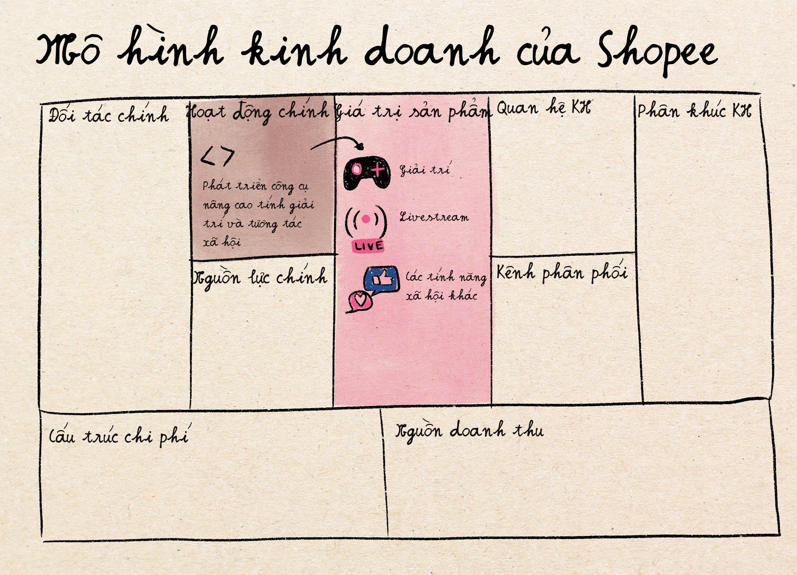Đây chỉ là một số điểm nổi bật khi phân tích các công ty thương mại điện tử khác nhau. Nếu như bạn đi sâu vào phân tích 9 phần của bản vẽ mô hình kinh doanh cho mỗi công ty trên, bạn sẽ có một chiến lược tổng thể đầy đủ hơn nữa (nhưng cái này thì mình để bạn tự phân tích nhé!)
Chương 6: Các công ty thương mại điện tử Trung Quốc thay đổi cuộc chơi
Ngay khi Amazon nghĩ rằng họ đã nắm chắc luật chơi thương mại điện tử, thì các nền tảng bán hàng của Trung Quốc xuất hiện: Temu, Shein và hệ sinh thái Alibaba đã tạo ra luật chơi hoàn toàn khác; và luật chơi mới này lại hiệu quả đến mức khiến các giám đốc điều hành ở Amazon phải toát mồ hôi.
Temu - Rẻ hơn Amazon 70%
"Đủ tốt" là được rồi
Các nhà bán lẻ ở phương Tây thường theo một quy luật là: hàng chất lượng càng cao thì người dùng càng thích. Thế nhưng Temu và Shein đã đảo ngược niềm tin đó và chứng minh rằng: đối với nhiều khách hàng, chất lượng "vừa đủ" với giá thấp hơn lại là lựa chọn tối ưu hơn.
Phần lớn mặt hàng bán trên Temu chẳng hạn sẽ rẻ hơn 70% so với cùng một loại mặt hàng tương tự trên Amazon. Chất lượng có thể không bằng, nhưng khách hàng cảm giác như là "vua chúa" vì tiền của họ có thể mua được nhiều thứ hơn.
Không còn nữa những người "trung gian"
Thương mại điện tử truyền thống ở Mỹ có khá nhiều nhà trung gian: Đi từ nơi sản xuất Trung Quốc → nhà nhập khẩu → nhà phân phối → nhà bán lẻ → người tiêu dùng. Và mỗi nhà trung gian lại lấy thêm một phí và làm tăng độ phức tạp của chuỗi cung ứng.
Các công ty thương mại điện tử của Trung Quốc, khi nhảy vào thị trường, loại bỏ gần hết các bước trung gian này cùng các chi phí liên quan. Họ kết nối trực tiếp người tiêu dùng với nhà máy và xưởng sản xuất; vì thế mà một món hàng giá thấp hơn 70-90% là dễ hiểu.
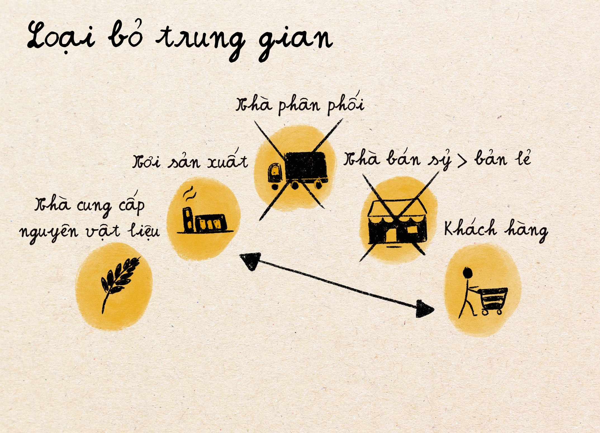Người mua có thể chờ!
Một trong những nước cờ thông minh nhất của Temu và Shein là... không cố gắng đọ tốc độ giao hàng với Amazon. Thay vào đó, họ biến việc giao hàng chậm thành một phần của giá trị cốt lõi, một tính năng chứ không phải là khuyết điểm. Thông điệp của họ là: "Vâng, giao hàng mất 2–3 tuần. Nhưng nhìn xem bạn tiết kiệm được biết bao nhiêu!"
Chiến lược này đặc biệt hiệu quả với các loại sản phẩm không cần gấp. Nếu bạn cần sạc điện thoại ngay hôm nay, bạn sẽ trả giá Amazon. Nhưng nếu là đồ trang trí, phụ kiện, hoặc mấy món hay hay để "thử chơi," thì đợi vài tuần để tiết kiệm 70% nghe ra lại hợp lý.
Hơn thế nữa, khi mua hàng trên Temu và Shein, vì hàng rẻ nên người dùng thường mua số lượng nhiều một lúc, dẫn tới lượng dopamine (hóc môn khiến ta cảm thấy hạnh phúc) cực mạnh so với mua 1, 2 món hàng trên Amazon. Cảm giác hạnh phúc khi mua sắm nhiều món hàng cùng lúc bù đắp cho cái thoả mãn tức thời (instant gratification) mà Amazon mang lại khi khách hàng biết họ sẽ nhận được hàng nhanh chóng.

Tăng tương tác bằng những trò chơi như ở sòng bài Casino
Temu lấy các yếu tố gây nghiện của game di động và áp dụng vào mua sắm — tạo nên một trải nghiệm vừa như là sàn thương mại điện tử, vừa như sòng bạc giải trí. Các tính năng như check-in hàng ngày, vòng quay may mắn, huy hiệu thành tích, giới thiệu bạn bè, v.v khiến người dùng quay lại thường xuyên ngay cả khi họ không cần phải mua gì. Rất hiệu quả, nhưng cũng rất đáng sợ.
Shein - Thời trang siêu tốc
Shein đã lấy mô hình "bán trực tiếp từ nhà sản xuất" (tiếng Anh là Direct-to-consumer, có nghĩa là bán thẳng tới người tiêu dùng mà không thông qua những nơi bán trung gian như bán sỷ, cửa hàng bán lẻ, v.v.) và áp dụng riêng cho ngành thời trang. Họ có thể đi từ phát hiện xu hướng → thiết kế sản phẩm → sản xuất → rao bán hàng chỉ trong vòng 3–5 ngày, trong khi các nhà bán lẻ thời trang truyền thống phải mất hàng tháng.
Để đạt được tốc đó, thuật toán của Shein quét mạng xã hội để phát hiện xu hướng nổi bật. Sau đó trong vài ngày, các nhà máy sản xuất hàng trăm biến thể sản phẩm dựa trên xu hướng đó. Shein đăng tất cả các mặt hàng này lên nền tảng của mình và sử dụng dữ liệu bán hàng thực tế để quyết định mặt hàng nào được sản xuất đại trà, mặt hàng nào sẽ ngưng sản xuất.
Alibaba - Đế chế bán sỷ
Trong khi Temu và Shein tập trung vào người tiêu dùng cá nhân, Alibaba xây dựng hạ tầng cho việc bán sỷ - họ trở thành chợ B2B lớn nhất thế giới. Có thể bạn không để ý, nhưng rất nhiều món hàng trên Amazon thực ra là được sản xuất trên nền tảng của Alibaba: Các nhà bán lẻ Mỹ sử dụng Alibaba để tìm nhà sản xuất, đặt hàng, và nhập khẩu các sản phẩm mà họ bán lại trên Amazon.
Alibaba giải quyết một nỗi đau của các doanh nghiệp nhỏ trước nay, đó là việc tìm kiếm và làm việc với các nhà máy sản xuất tốt và rẻ. Nhờ có Alibaba, các doanh nghiệp không cần phải xây dựng quan hệ hay hiểu biết sâu về thương mại quốc tế mà vẫn có thể tìm nhà máy, đặt mẫu, và bắt đầu kinh doanh.
Amazon không có phản ứng hay động tĩnh gì
Khác với nhiều dự đoán, Amazon không hề thay đổi mô hình kinh doanh của họ trước sự xuất hiện của các công ty như Temu và Shein. Lý do là vì toàn bộ hệ thống của Amazon đã được tối ưu hoá để giao hàng nhanh, với dịch vụ khách hàng tuyệt vời. Nếu họ chuyển sang cạnh tranh về giá cả thì sẽ mất đi lợi thế về những khía cạnh khác mà họ đã tập trung xây dựng mấy chục năm qua. Yêu cầu Amazon cạnh tranh với Temu về giá cũng giống như bảo xe đua Công thức 1 thi đấu tiết kiệm nhiên liệu với Toyota Prius.
Mặc dù không thể thay đổi mô hình kinh doanh, Amazon cũng nhận ra làn sóng "hàng rẻ" của Trung Quốc đã thay đổi kỳ vọng và thói quen của rất nhiều người tiêu dùng về giá cả và chất lượng. Khi người tiêu dùng quen với việc mua hàng "đủ tốt" với giá bằng một phần nhỏ so với mặt hàng thông thường, sẽ rất khó để thuyết phục họ quay lại trả giá cao hơn.
Bài học từ cuộc chiến thương mại điện tử cho ta thấy không phải chỉ có một con đường để thành công. Ngay cả Amazon, một công ty muốn bán tất cả mọi thứ, cũng không lường trước được một phân khúc khách hàng lớn sẵn sàng từ bỏ họ để mua hàng ở các nền tảng khác với tốc độ giao hàng như rùa, và chất lượng thì tầm tầm là giỏi. Điều này chứng tỏ "chuyên biệt hoá" ngành vẫn còn là một cơ hội. Khi Amazon quá tập trung vào việc cung cấp "mọi thứ cho tất cả mọi người", bạn có thể tập trung vào "cung cấp mọi thứ cho một nhóm khách hàng cụ thể" (như Etsy) hay "cung cấp một thứ cho mọi người". Thị trường chưa được phục vụ và nhu cầu chưa được đáp ứng vẫn còn ở khắp nơi. Cái quan trọng nhất vẫn là đảm bảo bạn đang giải quyết một vấn đề thật, mà người dùng thật sẵn sàng trả tiền để giải quyết.
Nói tóm lại
Để phát triển một công ty thương mại điện tử thành công, xây dựng nên tảng công nghệ tốt hay thiết kế một website đẹp thôi là không đủ. Doanh nhân phải hiểu được tâm lý hành vi người dùng, biết cách xây dựng lòng tin, tạo hiệu ứng mạng lưới, và đưa ra nhiều lựa chọn chiến lược đúng đắn cho mô hình kinh doanh.
- Amazon không thành công vì công nghệ vượt trội — mà vì họ hiểu khách hàng muốn nhiều lựa chọn, tốc độ giao hàng cao và sự tin cậy vào chất lượng trải nghiệm người dùng. Họ sẵn sàng chịu lỗ hàng chục năm để xây dựng hệ thống vượt trội.
- Etsy thành công vì không cố gắng cạnh tranh trực tiếp với Amazon — mà phục vụ một nhu cầu khác hẳn: mong muốn sở hữu những món đồ thủ công độc đáo với một câu chuyện mang tính nhân văn đằng sau sản phẩm.
- eBay thành công nhờ tạo điều kiện cho việc mua bán giữa những cá nhân bình thường không phải là doanh nghiệp lớn, và không can thiệp quá nhiều vào quá trình mua bán.
- Shopee thành công vì hiểu rằng người tiêu dùng trẻ ở Đông Nam Á muốn mua sắm là trải nghiệm mang tính giải trí và xã hội.
Mỗi công ty đã chọn những chiến lược riêng biệt về mô hình kinh doanh, khách hàng, doanh thu và cốt lõi dịch vụ. Không có một "cách đúng" duy nhất để xây dựng thị trường – nhưng chắc chắn có những cách sai. Hiểu được sự khác biệt đó là điều tối quan trọng.